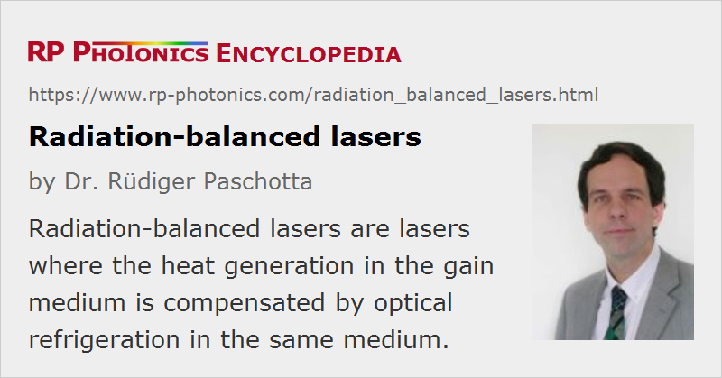

Radiation-balanced Lasers
Acronym: RBL
Definition: lasers where the heat generation in the gain medium is compensated by optical refrigeration in the same medium
Alternative term: athermal lasers
More general terms: lasers
How to cite the article; suggest additional literature
Author: Dr. Rüdiger Paschotta
A common problem with high-power lasers is coping with the heat generated in the gain medium, which can cause a number of detrimental effects, including thermal fracture and thermal lensing. The usual approach is to minimize and/or efficiently remove the waste heat. The alternative concept of the radiation-balanced laser (or athermal laser), invented by Steven R. Bowman [1] at the Naval Research Laboratory in Washington, DC, aims at eliminating these thermal problems altogether by totally eliminating the heat load. This is possible by using the principle of optical refrigeration. If certain conditions are met, the fluorescence cooling can totally compensate the heating associated with laser emission. The photon energy of the pump has to be higher than that of the laser radiation (as usual), but also lower than the average fluorescence photon energy.
It is interesting to consider the entropy balance of lasers. The conversion of pump light to laser light is associated with a reduction in entropy, basically because light is collected from many modes and concentrated in few modes of the radiation field. In conventional lasers, this is compensated by the entropy generation associated with heat dissipation. In a radiation-balanced laser, the latter mechanism does not exist, but enough entropy is generated in the fluorescence light to avoid breaking the second law of thermodynamics, which demands that the total entropy can not decrease.
The current status of this research is that the concept of radiation-balanced lasers has been theoretically studied in some detail [1, 3] (using thermodynamic principles), that suitable materials (mostly ytterbium-doped gain media) have been studied [2], and that a laser with reduced (but not yet fully compensated) internal heating has been demonstrated [4]. A fully radiation-balanced laser has not yet been demonstrated.
Unfortunately, the concept of radiation-balanced lasers introduces a number of constraints, which makes the realization of practical high-power radiation-balanced lasers difficult. First, the gain medium must have suitable absorption and emission spectra and must exhibit low parasitic heating (high quantum efficiency, low parasitic absorption). The pump and laser wavelength have to be suitably chosen. Furthermore, there are various trade-offs and limitations which in this form do not exist in conventional lasers. For example, these trade-offs limit the achievable gain and (perhaps more importantly) the laser's power efficiency: a large amount of fluorescent light, carrying away a lot of power, is required for the cooling mechanism, so that the maximum efficiency achievable does not significantly exceed 30% in most considered configurations. Also, the transverse extension of the gain medium (and thus the achievable output power) is limited by the requirement to avoid excessive reabsorption of fluorescence (which would disturb the cooling process).
Although the practical relevance of this concept may therefore be fairly limited, the concept is interesting theoretically, and dealing with it improves the understanding of thermodynamic aspects of lasers and also that of various fundamental limitations. The search for suitable gain media also brings benefits for optical refrigeration in other context.
Questions and Comments from Users
Here you can submit questions and comments. As far as they get accepted by the author, they will appear above this paragraph together with the author’s answer. The author will decide on acceptance based on certain criteria. Essentially, the issue must be of sufficiently broad interest.
Please do not enter personal data here; we would otherwise delete it soon. (See also our privacy declaration.) If you wish to receive personal feedback or consultancy from the author, please contact him e.g. via e-mail.
By submitting the information, you give your consent to the potential publication of your inputs on our website according to our rules. (If you later retract your consent, we will delete those inputs.) As your inputs are first reviewed by the author, they may be published with some delay.
Bibliography
| [1] | S. R. Bowman, “Lasers without internal heat generation”, IEEE J. Quantum Electron. 35 (1), 115 (1999), doi:10.1109/3.737628 |
| [2] | S. R. Bowman and C. E. Mungan, “New materials for optical cooling”, Appl. Phys. B 71, 807 (2000), doi:10.1007/s003400000416 |
| [3] | C. E. Mungan, “Thermodynamics of radiation-balanced lasing”, J. Opt. Soc. Am. B 20 (5), 1075 (2003), doi:10.1364/JOSAB.20.001075 |
| [4] | S. R. Bowman et al., “Ytterbium laser with reduced thermal loading”, IEEE J. Quantum Electron. 41 (12), 1510 (2005), doi:10.1109/JQE.2005.858796 |
| [5] | S. R. Bowman et al., “Minimizing heat generation in solid-state lasers”, IEEE J. Quantum Electron. 46 (7), 1076 (2010), doi:10.1109/JQE.2010.2043415 |
| [6] | Z. Yang et al., “Radiation-balanced Yb:YAG disk laser”, Opt. Express 27 (2), 1392 (2019), doi:10.1364/OE.27.001392 |
See also: optical refrigeration, fluorescence, ytterbium-doped gain media, high-power lasers
and other articles in the category lasers
|  |
If you like this page, please share the link with your friends and colleagues, e.g. via social media:
These sharing buttons are implemented in a privacy-friendly way!